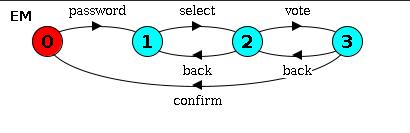
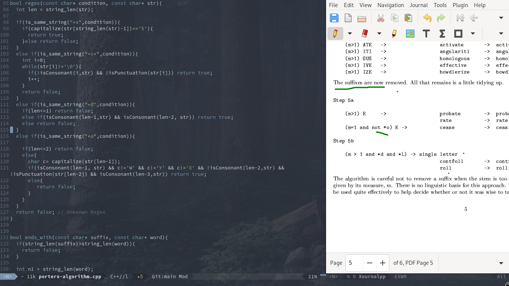

Writings & Articles
Technical notes, research commentary, and informal explorations across formal methods, AI, and software engineering.
Formal Methods

Formal Methods
Case studies and surveys analyzing whether UML to LTS transformation is feasible.

Formal Methods · HCI
PL and HCI are deeply related. We incorporate human factors into the Fortis formal design tool.

Formal Methods · TLA+
A walkthrough of Leslie Lamport's famous formal specification language and its role in building sound reasoning.

Formal Methods
Formal methods are powerful but complex. Lightweight variants lower the barrier while preserving rigor.

Formal Methods · Security
We formally define a login system's safety properties and redesign it using formal method-guided rewrites.
AI & Machine Learning

AI · Formal Verification
As AI is deployed in critical systems, proving model robustness before deployment becomes essential.

AI · Survey
A survey of state-of-the-art methodologies and tools for formally verifying deep neural networks.

AI · SLM
OuteAI's 65M–300M parameter models run on minimal hardware. Can they serve as practical chat assistants?

AI · Philosophy
Exploring the link between intelligence and emergent behavior — and what that means for artificial general intelligence.
Systems & Tools

Linux · Workflow
GNOME can be customized into a powerful, keyboard-driven workflow. Here's an example setup.

Emacs · Linux
EXWM is extremely lightweight — ideal for low-end hardware. A minimal working configuration for 2024.
Misc

Personal
A running list of submission deadlines I'm tracking for conferences and journals.